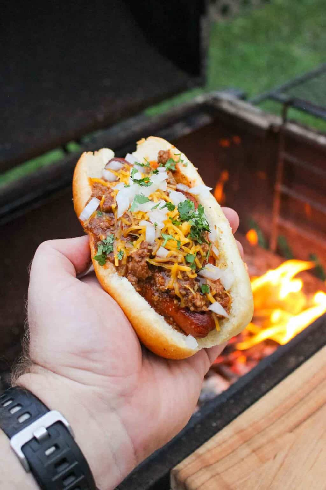

Chilli Cheese Glizzburger

Description:
This Chili Cheese Glizzburger is my version of the iconic “Glizzburger” invented by the one and only “@thevulgarchef”. It’s a ground beef stuffed hot dog served on a bun and piled with homemade beef chili.
And it’s really freaking good.
Ingredients
Glizzburger:
- 5-6 large Beef Hot Dogs
- 2 lbs Ground Beef 80/20
- 2 cups Shredded Sharp Cheddar Cheese
- 2 tbsp Favorite Burger Seasoning
- Diced White Onions for garnish
- Chopped Cilantro for garnish
- 5-6 Hot Dog Buns
Chilli:
- 2 lbs Ground Beef
- 1 Whole White Onion cubed
- 28 oz Tomatoes peeled and chopped
- 6 oz Light Beer
- 2 cups Beef Broth
- 2.5 tbsp Minced Garlic
- 2 tbsp Chipotle Purée
- 2 tbsp Guajillo Chili Powder
- 1.5 tbsp Ground Cumin
- 1.5 tbsp Garlic Powder
- 1 tbsp Black Pepper
- 1 tbsp Kosher Salt
Steps:
- Preheat a medium heat fire for direct cooking (around 350F).
- Add a dutch oven over the heat to preheat for 2 minutes with some oil. Next, add your ground beef for the chili and let brown for about 2.5-3 minutes. Once browned, pull off and set aside. Add an empty dutch oven back to the grill along with the chopped white onion and minced garlic. Brown for 2 minutes, then add your guajillo chili powder, ground cumin, garlic powder, black pepper and kosher salt. Let cook for 1 minute to stir around so that seasoning gets all over the veggies. Finally, add your beef, beef broth, chipotle puree, chopped tomatoes and browned ground beef. Stir around and then cover the dutch oven. Let the heat drop to 300-325F and let the chili simmer until thickened (about 1.5-2 hours). Make sure to stir occasionally. If your chili gets too thick, just add more beef broth at the end!
- As the chili thickens, grab your hot dogs and ground beef. Start by slicing your hot dog almost from end to end, but make sure the ends are still connected. Next, take a handful of ground beef and “stuff” it into each oblong hot dog (should look like a football). Next, place these on a tray and set in the fridge to set for 1 hour.
- Once the chili is thickened, pull it off and keep it warm. Kick up the heat in the grill to 375F and pull out your Glizzburgers from the fridge. Add to the grill and cook for about 2-3 minutes per side making to season both sides with your favorite burger seasoning. If they begin burning, pull them to a cooler side of the grill and close the lid to keep them cooking. Once the glizzburgers are done to your desired liking, let them rest for 2-3 minutes.
- Finally, place a glizzburger into a warmed hot dog bun. Top with a scoop of the chili then add shredded sharp cheddar, diced white onions and chopped cilantro. Serve and enjoy!